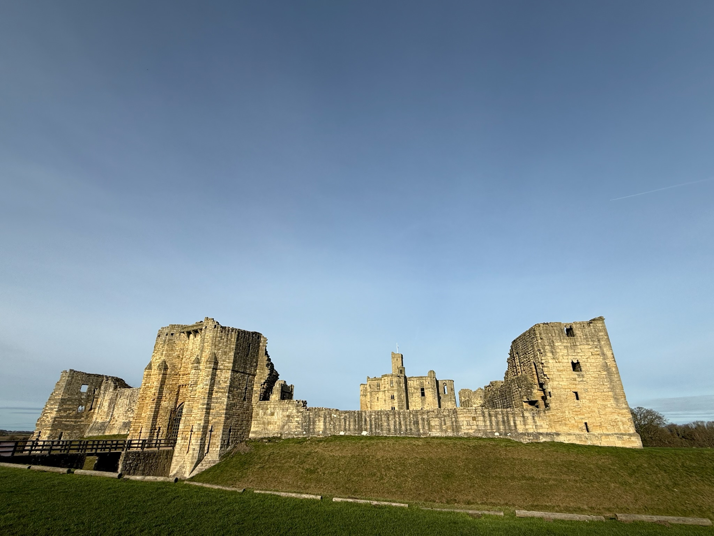

As recent arrivals & long-time visitors, we've compiled our favourite places to visit, eat, and explore. Here are our top recommendations to make the most of your stay in and around Amble-By-The-Sea.

"The Friendliest Port" as named in the 1930s by RMS Mauretania on it's final journey Amble-by-the-Sea sits on the mouth of the Coquet Estuary and it remains a work port for trawlers & trips out to Couquet Island. Fresh catches can be purchased from Alliance Fish.

Little Shore is right in town, next to the lovely pier and harbour. With dogs you can walk south to Amble Links onward to Low Hauxley & even further toward Druridge Bay. All in the shadow of Coquet Island, home to puffins, Roseate terns, a seal colony and the mercurial dolphin pods that patrol this coastline.
A trail of public sculptures inspired by the bird-life found around the Amble coast. The artworks have been created by nationally and internationally renowned artists, each bringing something unique and very special to the area. To experience the virtual, poetry & sound pieces you will need to download the app which also gives additional information on the artists and a location map.
With 15 retail "pods" covering coffe & food outlets, gifts and local handicrafts, no visit to Amble is complete without a visit. You can also visit the Seafood caentre & lobster hatchery. And, it's the base for Puffin Cruises.

Coquet Island is a vital RSPB nature reserve off the Northumberland coast, famous for holding the UK's only breeding colony of Roseate Terns and home to 40,000 breeding Puffins in spring & summer every year. Puffin Cruises have a pod where you can book your trip (in advance to avoid disappointment) or even watch "puffin cam" whilst you wait!
Little Shore is right in town, next to the lovely pier and harbour. With dogs you can walk south to Amble Links anward to Low Hauxley & even further toward Drurudge Bay. In the shadow of Coquet Island.

Home to thousands of puffins, grey seals, and seabirds. Boat trips depart from Seahouses harbour – an absolute must-do! Best visited April-July for puffin season.

Just a 5-minute walk from the cottage! Beautiful sandy beach with rock pools to explore at low tide. Perfect for dogs, families, and coastal walks.

A magical tidal island with an ancient priory and castle. Check tide times before visiting – you can only cross the causeway at low tide!
Award-winning seafood restaurant right on Amble harbour. Fresh lobster, crab, and fish dishes with stunning views. Booking essential!
You can't visit the coast without proper fish and chips! Several excellent chippies in Seahouses – nothing beats eating them overlooking the harbour.
Visit the famous L. Robson & Sons smokehouse in Craster to see traditional kipper smoking and pick up some of the finest smoked fish in Britain.
Amble has a Tesco for essentials & very close to the cottage a larger Morrisons supermarket. For more options, Alnwick (20 min) has Turnbulls and Aldi, or Morpeth (30 min) has a wider selection.
The nearest vet is a few minutes walk or drive from the cottage. We can provide contact details and directions on request – just ask when you book!
Most beaches are dog-friendly year-round. Check tide times before heading to Holy Island. Lifeguards patrol some beaches in summer months.
Northumberland boasts more castles than any other English county, set against a dramatic coastline designated an Area of Outstanding Natural Beauty.

Magnificent medieval fortress overlooking the Coquet

Iconic fortress rising above golden sands

Dramatic ruins reached only on foot across clifftops

The real Hogwarts - Harry Potter filming location

Lindisfarne - tidal island with ancient priory

Gateway to the Farne Islands and seal watching

Famous for kippers and stunning coastal walks

Seabird sanctuary with seals and St Cuthbert's chapel
Venture inland to discover rolling hills, ancient forests, and the wild beauty of Northumberland National Park and the Dark Sky Reserve.

UNESCO World Heritage Roman frontier

Northern Europe's largest man-made lake surrounded by England's largest forest

Europe's largest Dark Sky Reserve for stargazing
Beyond the classics, Northumberland has countless hidden gems, gardens, historic houses and experiences waiting to be discovered.

One of the world's most extraordinary gardens & the largest Taihaku cherry blossom orchard in the world!

First smart house in the world lit by hydroelectricity

One of Britain's largest second-hand bookshops

Roman fort with ongoing archaeological discoveries

Britain's most haunted castle and wild cattle

Story of the famous Victorian lighthouse heroine

Home of Earl Grey tea, stunning coastal gardens & walks